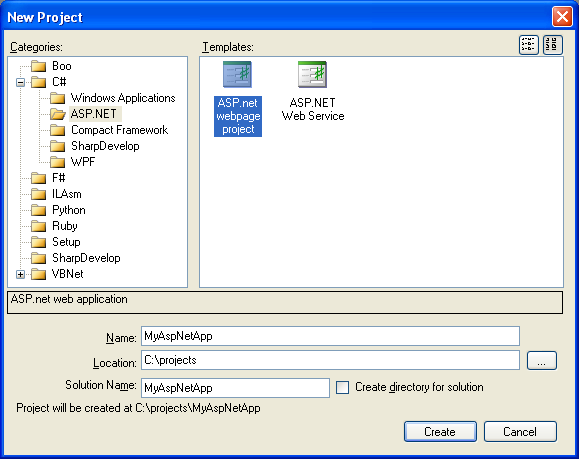
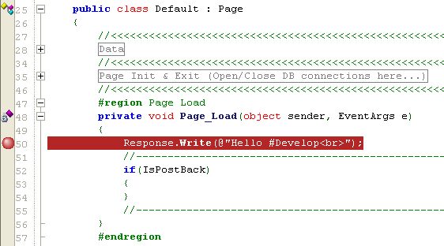
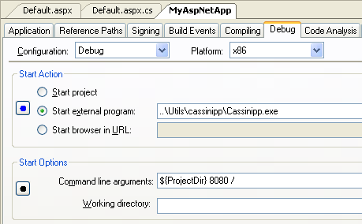
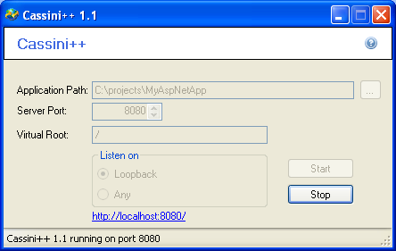
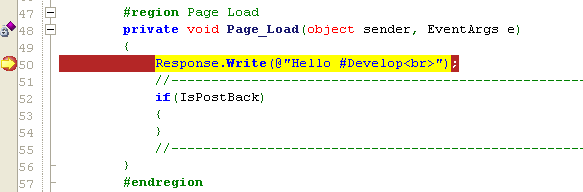
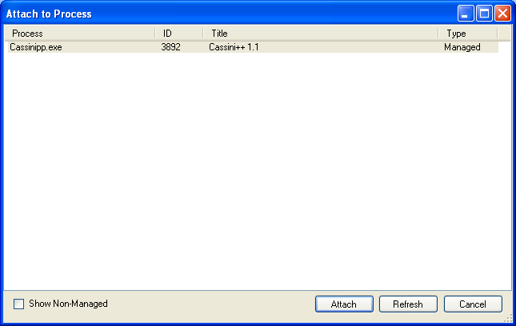

This tutorial shows you how to debug an ASP.NET application with SharpDevelop.
Before we begin it should be noted that SharpDevelop does not have great ASP.NET support. There is no web forms designer, no intellisense for ASP.NET pages (.aspx) and no support for the new style ASP.NET Web Site projects introduced in Visual Studio 2005. You can however create an ASP.NET Web Application project or an ASP.NET Web Service in SharpDevelop. If you are looking for a better ASP.NET experience then you should use Microsoft Visual Web Developer. However if still want to use SharpDevelop then here is how to debug your ASP.NET application.
First let us create an ASP.NET Web Application. From the File menu select New, then Solution, to open up the New Project dialog.

On the left hand side of this dialog select ASP.NET category underneath the C# category. On the right hand side select the ASP.NET web page project icon. Give project a name and choose where you want the project created and click the Create button. SharpDevelop will then create a basic ASP.NET Web Application project.
In order to be able to debug the ASP.NET application we will be using Cassini. Cassini is a lightweight open source web server. It was originally released as a sample by Microsoft. Dmitry Robsman then updated the sample to run under .NET 3.5. After that different versions based on Dmitry's original work were released on codeplex. Any of these versions of Cassini, in the list below, will work with SharpDevelop. The version of Cassini provided by Dmitry requires you to compile the source code. The other versions do not. The Cassini Developer's edition has slightly different command line options compared to the rest so it will not be covered in the following discussion. We will use Cassini++ for the rest of this tutorial.
Download Cassini++ from the link provided and extract the files to a directory on the same machine that you are running SharpDevelop on.
First let us set a breakpoint in our application. Find the Default.aspx.cs file in your project and open it in the text editor. Locate the Page_Load method and set a breakpoint inside this method on the Response.Write line.

Now you need to configure the project to run Cassini when you debug your application. From the Project menu select Project Options. In the options dialog select the Debug tab. Set the Start Action to Start external program and enter the path to the Cassini executable. In the Start Options enter the command line that will be passed to Cassini. The Cassini command line is of the form:
<physical-path> <port> <virtual-path>
In the screenshot below you can see an example command line passed to Cassini. In this case Cassini will listen for requests on port 8080, the virtual path will be set to "/" and the physical path to your project is specified by a using SharpDevelop property ${ProjectDir} which will be replaced when you start debugging. You can put the full path to your project directory here instead of using the ProjectDir property.

Save the changes you made to the project options. Then select Run from the Debug menu. Cassini should then start.

Click the http://localhost:8080/ hyperlink at the bottom of the Cassini window to visit your application's web page in the default browser. When the page is loaded in the browser the breakpoint in Page_Load should then be hit and you can start debugging.

As an alternative to configuring SharpDevelop to start Cassini every time you debug your ASP.NET application you can leave Cassini running and attach to its process when you need to.
First on your desktop create a shortcut to Cassini and specify the appropriate Cassini command line as explained earlier. Note that the ${ProjectDir} property cannot be used here so instead you will need to put the full path to your project. Start Cassini by double clicking the shortcut and use a browser to display your web page. Now in SharpDevelop select Attach to Process from the Debug menu. Select the Cassini process and click the Attach button.

Now when you press Ctrl+F5 in the browser showing your web page to refresh the page the breakpoint in the Page_Load method should be hit and you can start debugging.